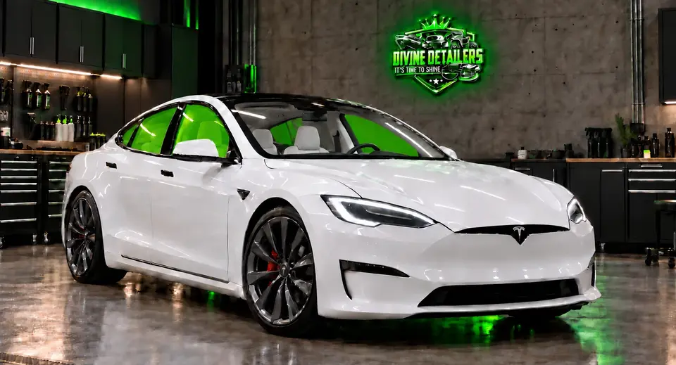
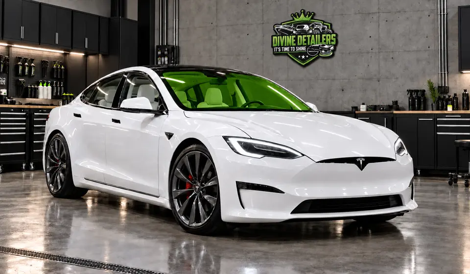
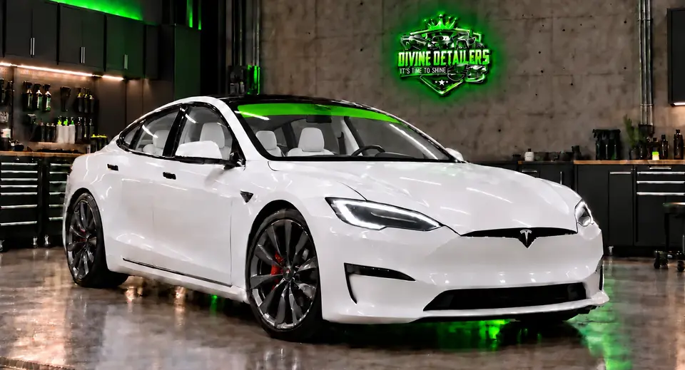
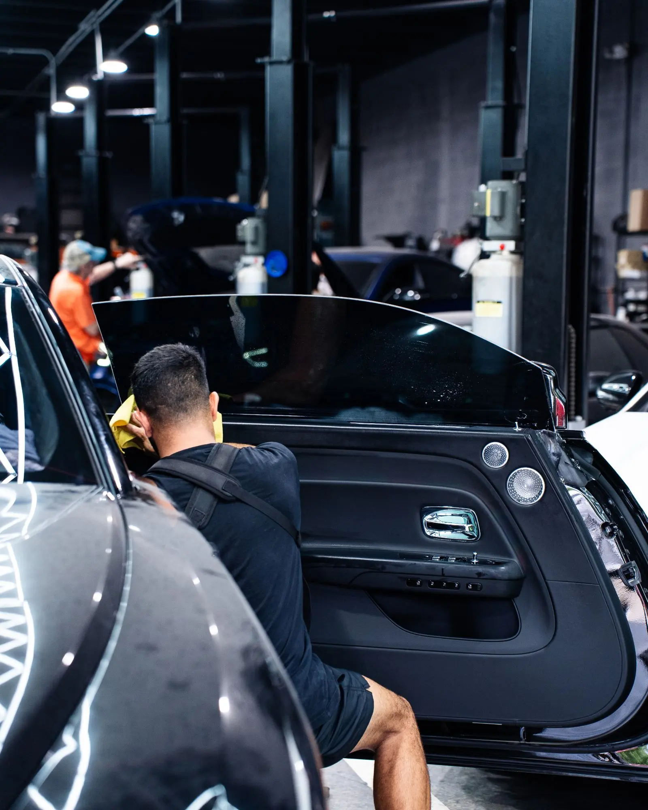

Window Tinting
Enhance privacy, reduce glare, and keep your interior cooler with tint installation.


Stay cool, private and protected.
Heat rejection
Cuts the heat that builds up in the cabin
Easier on you and your AC
UV protection
Blocks nearly all harmful UV rays
Protects skin and interiors
Privacy
Dark enough to limit views in
Clear visibility looking out
Clean look
Computer-cut film, precise edges
A finished, factory-style fit
Tint package options
Browse our different package options.
Two windows
- Front driver side
- Front passenger side

Full tint
- Front driver + passenger
- Rear driver + passenger

Windshield
- Full windshield
- Extra protection

Sunvisor strip
- Sun strip
- Reduces sun glare
DIVINE DETAILERS
Window Tint Simulator
Select a side window shade below
Balanced privacy with clear night visibility. A daily-driver favorite.
Florida law: Tint darkness limits differ by window and vehicle. We will confirm the legal options for your vehicle before we install anything.

Comfort, privacy, and protection
We install premium ceramic window film that rejects heat, cuts glare and blocks harmful UV rays, so every drive in Miami’s sun feels cooler and more comfortable.
Comfort
Reduces interior heat and makes driving more enjoyable year-round.
Privacy
Limits visibility into your vehicle while keeping clear visibility out.
Protection
Blocks harmful UV rays that damage interiors and skin.
Appearance
Gives your vehicle a clean, finished and more refined look.
Cooler drives. Cleaner look.
Miami’s sunshine can heat up a cabin quickly. Premium ceramic window film stops heat before it builds up inside, so even after sitting in direct sun, the vehicle feels more comfortable for you and your passengers.


Why trust Divine Detailers
Our certified installers cut film with precision and finish every job with a close final inspection before delivery. We use premium ceramic films with a manufacturer warranty, and we back our workmanship.
Cooler drives in Miami's sun
Premium ceramic window film stops solar heat before it warms the cabin. Seats, steering wheel and dash stay more comfortable after the car sits in the sun.
Because the film has no metal in it, GPS, phone and radio signals keep working normally.

Protect your interior and your skin
UV rays fade and crack leather, plastics and upholstery over time. Quality film blocks nearly all of them, so your interior keeps its color and feel.
The same film helps hold glass together and reduces glare for safer, less tiring driving.

A cleaner, more finished look
Tint changes how a vehicle looks from the first glance. We help you pick a shade that fits your style and stays within legal limits for each window.
Every piece is cut to fit and installed in a clean bay, then inspected before you drive away.


Everything you wanted to know
What is ceramic window tint?
Ceramic window tint is a film made with nano-ceramic particles instead of dye or metal. It blocks a large share of the sun's heat and UV rays and cuts glare, and because it contains no metal it does not interfere with GPS, cell phone, radio or Bluetooth signals. It also holds its color and clarity longer than traditional dyed film.
How much does window tint cost?
Price depends on the film you choose, the size of the vehicle and how many windows are being done. Ceramic film costs more than basic dyed film, and larger vehicles take more material and time. Send us your vehicle details through the quote form and we will price it after confirming what you want.
How long does window tint last?
A quality film can last many years. Ceramic films tend to last longest because they resist fading, bubbling and turning purple. Care and quality of installation matter, and a reputable film comes with a manufacturer warranty.
Is window tint legal in Florida?
Yes, within the limits of the law. Florida sets rules on how dark the film can be, which differ for the front side windows, rear side windows and rear window and can depend on the type of vehicle. There are also limits on how reflective the film can be, and the windshield can only be tinted in a strip near the top. We will go over the legal limits for your specific vehicle before we install anything. Check the current state rules if you want to confirm them yourself.
Can window tint be removed?
Yes. A professional can remove old film with heat and steam without damaging the glass or the rear defroster lines. Removing it yourself can leave behind adhesive residue and scratches, so it is better done by a shop.
How dark should I go, and what percentage is best for privacy?
The lower the VLT percentage, the darker the film and the more privacy it gives. Balance the look you want with the legal limit for each window and how comfortable you are driving at night. Many people choose a darker shade on the back windows for privacy and a lighter one up front for visibility. We can show you samples against the glass so you can see the difference.
Does window tint block UV rays?
Yes. Quality ceramic films block close to all UV rays. That protects your skin and keeps your seats, dashboard and trim from fading and cracking.
How do I care for window tint?
Do not roll your windows down for a couple of days after installation so the film can fully cure. After that, clean with a soft microfiber cloth and an ammonia-free glass cleaner. Avoid abrasive pads and harsh chemicals. Small hazy spots or water pockets right after install are normal and clear up as the film cures.
Can I tint my windows myself?
You can buy a kit, but tint takes skill and a very clean environment. Dust, creases, bubbles and uneven edges are common with DIY work, and a mistake means starting over. A professional install gives a cleaner finish and a better-lasting result.
Can you tint a windshield?
Only a strip across the top of the windshield, above the manufacturer's AS-1 line, and it generally has to be non-reflective. Tinting below that line is not permitted. Some shops also offer clear, high-performance heat-rejecting film for the full windshield where the law allows. Ask us what is legal for your vehicle.
Does window tint block radio or GPS signals?
Ceramic tint does not, because it has no metal in it. Older metallic films can interfere with signals, which is one reason ceramic is the better choice for modern vehicles.
What brand and type of window tint do you use?
We install high-performance ceramic window films from leading manufacturers, backed by a manufacturer warranty. If you would like a specific brand or performance level, ask us when you request a quote and we will go through the options for your vehicle and budget.
Do you cut window tint with a plotter or by hand?
Both, depending on the window. A plotter gives precise patterns without a blade touching the glass. Rear windows with strong compound curves often come out better with a skilled installer heat-shaping the film so it lies flat without creases. We use whichever method gives the cleanest result on your vehicle.
What is the difference between TSER and IR rejection?
TSER (total solar energy rejected) measures the share of the sun's total energy the film blocks, including visible light, infrared and UV. It is the most useful single number for comparing films. IR rejection measures only the infrared portion, which is where much of the felt heat comes from, but the figures are measured in different ways by different brands, so treat them as a secondary data point.
Is IR rejection the same as heat rejection?
Not exactly. Heat rejection in real-world comfort is better described by TSER, or by SHGC (solar heat gain coefficient). Two films can claim similar IR numbers and still feel different on a hot day. When you compare films, look at both the shade and the TSER or SHGC data.
Can I get window tint and PPF at the same time?
Usually, yes. They go on different surfaces, so they do not conflict. We install PPF first, since it goes on the exterior paint, and then tint the glass. The main factors are scheduling and PPF cure time, but it is a common combination, particularly for new cars getting a full protection package.
We don’t just detail cars, we perfect them.
Reach out and let’s talk about what your car needs next.
Contact us